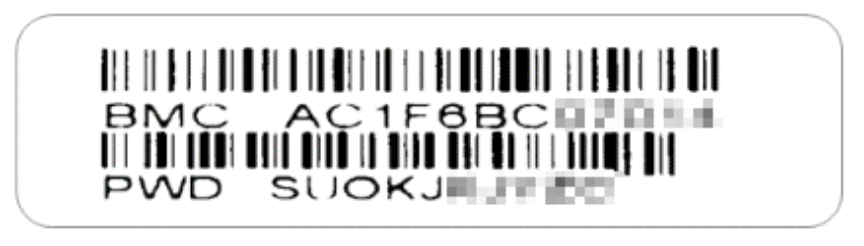
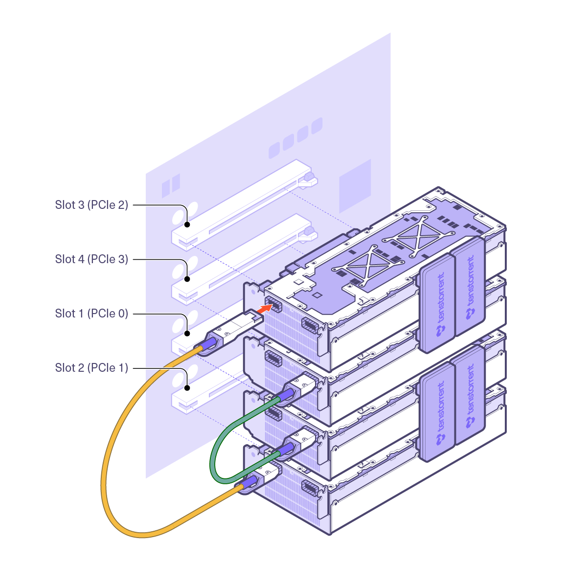

Specifications, Requirements, and Setup
Package Contents
The Tenstorrent TT-LoudBox (T3000) 4U/Desktop Workstation system package includes:
Tenstorrent TT-LoudBox (T3000) 4U/Desktop Workstation system
C13 Power Cable, 1.8m/6ft.
4U Rack-Mounting Kit
2x QSFP-DD 400GbE Cable, 0.6m/2ft. (TW-02002 only)
System Specifications
Specification |
TT-LoudBox (TW-02001) |
TT-LoudBox (TW-02002) |
|---|---|---|
CPU |
2x Intel® Xeon® Silver 4309Y |
2x Intel® Xeon® Silver 4309Y |
Memory |
256GB (8x32 GB) |
512GB (16x32 GB) |
Storage |
3.8 TB U.2 NVMe PCIe 4.0 x4 |
3.8 TB U.2 NVMe PCIe 4.0 x4 |
Tensix Processors |
4x Tenstorrent Wormhole™ n150s Tensix Processor |
4x Tenstorrent Wormhole™ n300s Tensix Processor* |
Cables |
- |
2x QSFP-DD 400GbE Cable, 0.6m/2ft. |
Host System Connectivity |
2x RJ45 10GBase-T via Intel® X550-AT |
2x RJ45 10GBase-T via Intel® X550-AT |
Tensix Processor Connectivity |
8x QSFP-DD Active 200G (2 per card) |
8x QSFP-DD Active 200G (2 per card) |
Power Supply |
1+1 Titanium Level PSUs |
1+1 Titanium Level PSUs |
Base System |
||
Operating System |
None |
None |
*200V input or higher input voltage required for TW-02002.
NOTE: The MAC address and password for the BMC (baseboard management controller) can be found on labels on both the system chassis and the motherboard. A small slide-out tray with the label is hidden behind the front cover, at the bottom of the system. The label will look like this:

Operating System Requirements
The Tenstorrent TT-LoudBox system ships without an operating system installed. We recommend installing Ubuntu 22.04 (Jammy Jellyfish) to properly use the Tenstorrent Tensix Processors.
4U Rack-Mounting Instructions
The Tenstorrent TT-LoudBox ships assembled for desktop use. Instructions to rack-mount the system using the included 4U rack-mounting kit are available in Chapter 2 of the Manual for the SuperMicro SuperServer SYS-740GP-TNRT.
QSFP-DD Connections and System Topology (TW-02002)
The Tenstorrent TT-LoudBox configuration in TW-02002 includes four Wormhole™ n300s Tensix Processors and internal Warp 100 bridges and external QSFP-DD cables that enable the Tensix Processor mesh.

The TT-LoudBox ships with the Warp 100 bridges connected, but the two QSFP-DD cables will need to be connected by the customer. This diagram displays the system topology and how the cards are enumerated, along with where the Warp 100 bridges are connected and where the included QSFP-DD cables need to be connected.

One QSFP-DD cable will need to be connected to Port 1 on the cards in Slots 1 and 4.
One QSFP-DD cable will need to be connected to Port 2 on the cards in Slots 3 and 2.
Environment Specifications
Please visit the Tenstorrent Wormhole n150s and n300s specification page for environment specifications for those cards.
Please visit the SuperMicro SuperServer SYS-740GP-TNRT page for environment specifications for this system.
Software Setup
Instructions on how to set up software on TT-LoudBox are available here.